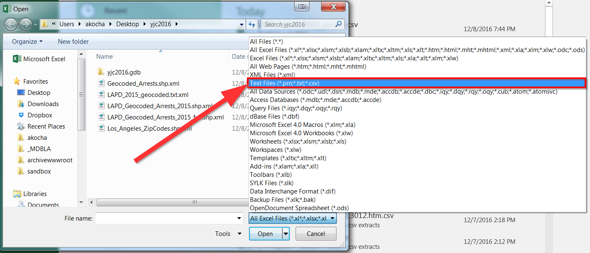
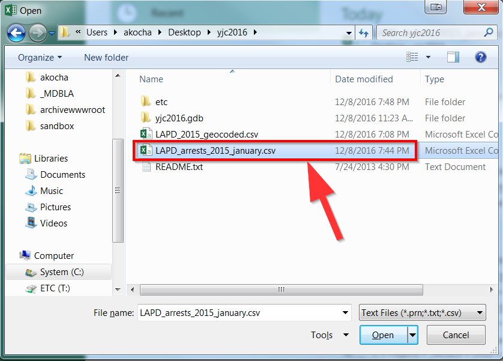
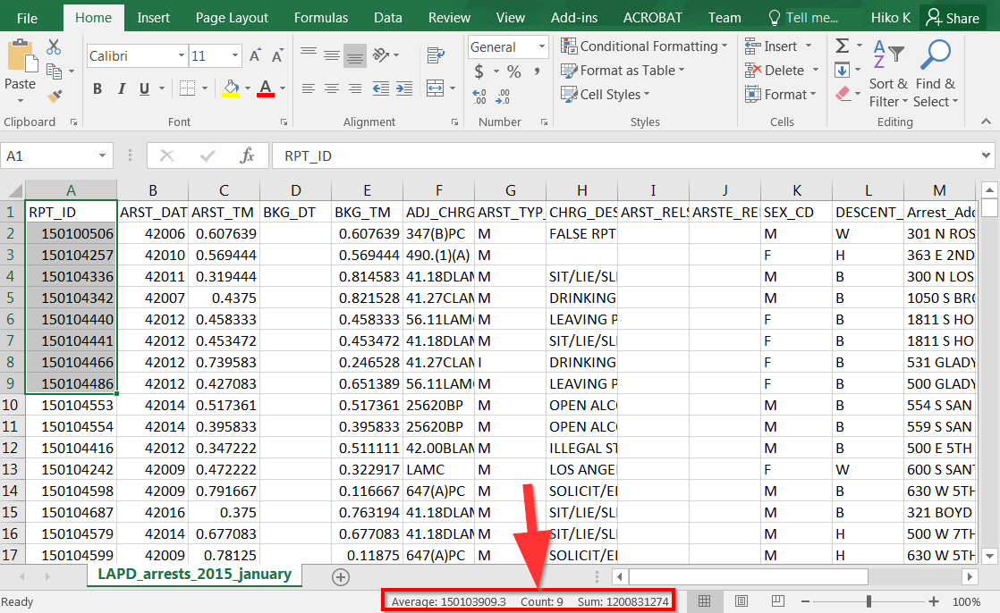
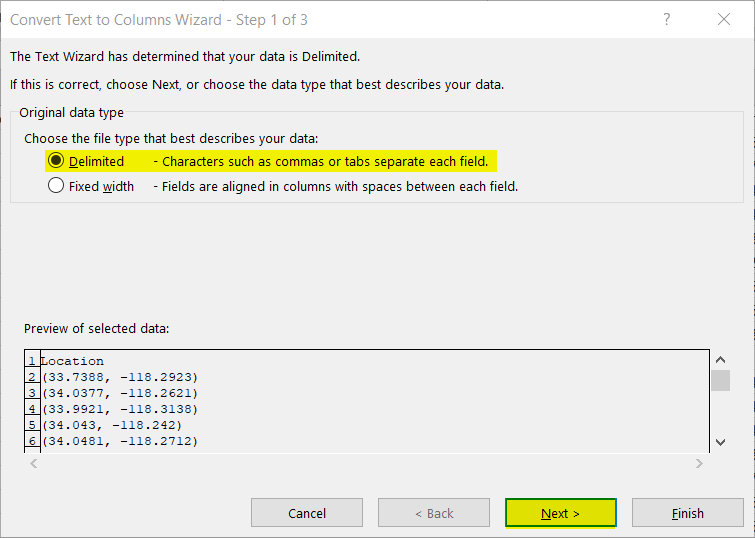
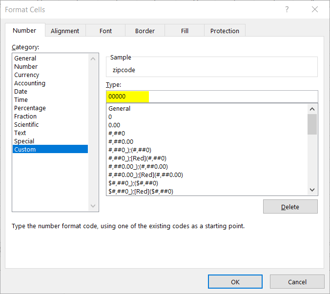

Quick Visual Guide to Cleaning Data in Microsoft Excel¶
Getting Started¶
Note: This tutorial uses Los Angeles Police Department Arrest data filtered for the month of January downloaded from Los Angeles Open Data portal (see: Quick Visual Guide to Visualizing Data on the Los Angeles Open Data Portal )
How to open CSV files¶
- Go to File -> Open
2. Select “Text” file 
{kind=link}
3. Select the “LAPD_arrests_2015_january.csv” file: 
{kind=link}
4. Excel always provides a summary of selected information near the bottom: 
{kind=link}
Before going forward, let’s make sure our data columns are in good order:
ARST_DATE should be a date field, and ARST_TM should be a Time Field.
- Select the columns:
{kind=link}
6. Select dropdown box near the top:

- Then choose “Short Date”:

- For ARST_TM choose “Time”:
{kind=link}
- Do the same for BKG_DT and BKG_TM as well.
Formulas¶
Excel is a spreadsheet program, which means it is made up of rows and columns: one giant table. One of the most powerful tools is formulas, which means starting a cell with an “=”
Go ahead and find an empty cell so we can start our formula:
{kind=link}
S2 looks like a good spot.
The most basic formula we will use is to combine columns together:
=A1 & B1
Every Excel formula relies on using the cells of a table in order to work. For example A1 is the very first cell in the spreadsheet. If you want to combine the contents in the first cell together with the second column, then you can use “=A1&B1”
Question: Whats the formula to combine the Lat(Q2) and Long(R2) columns into one?¶
If you simply add the two, it might look a little messy, so we should add a space in between columns by the following formula:
=A1&“ “&B1
You will notice that the “ “symbols acts as a seperator. You can go ahead and put anything in between those symbols and it will appear in between the result.
Question: Whats the formula to combine the Lat(Q2) and Long(R2) columns into one with a comma in between?¶
Sorting¶
In the top part of the menu you can select “Sort”:
{kind=link}
A dropdown arrow will now be shown next to the first row (also known as the header)
{kind=link}
When clicking it, you can choose to sort the information in different ways:
{kind=link}
We will sort the data from highest to lowest arrest date:
{kind=link}
Feel free to explore sorting the data!
Filtering¶
You can also filter the data by using the Checkboxes or the Filter By box below the Sort options:
{kind=link}
Different data types will have different filter options, feel free to try it out and answer this question:
Question: How many arrests were there on January 1st?¶
Splitting content from one cell into two cells¶
Sometimes a dataset may include coordinates, which can easily be imported into ArcGIS Online to visualize spatially. However, in order to import seamlessly the latitude and longitude need to be in two separate columns. Follow the instructions below if the coordinates are in one column.
- Select the cell or cells whose contents you want to split.
- Important: When you split the contents, they will overwrite the contents in the next cell to the right, so make sure to have an empty column there.
{kind=link}
- On the Data tab, in the Data Tools group, click Text to Columns. The Convert Text to Columns Wizard opens.
{kind=link}
3. Choose Delimited if it is not already selected, and then click Next. 
{kind=link}
- Select the delimiter or delimiters to define the places where you want to split the cell content. The Data preview section shows you what your content would look like. Click Next.
{kind=link}
- In the Column data format area, select the data format for the new columns. By default, the columns have the same data format as the original cell. Click Finish.
{kind=link}
- The coordinates are now split into two columns based on the comma delimiter. However, the new columns still have the single parenthesis. To remove the parentheses add two new columns to the right of each new coordinate column.
{kind=link}
{kind=link}
- Type the following equation in the cell to the right of the first column: =RIGHT(Q2, LEN(Q2)-1).
{kind=link}
- To copy the equation to the remaining rows, select the cell and hover over the bottom right corner until the cursor becomes a cross. Double-click.
{kind=link}
- Type the following equation in the cell to the right of the second new location column: =LEFT(S2, LEN(S2)-1). Repeat the process for the longitude column and copy the formula into the remaining cells. Make sure to label the new columns ‘lat’ and ‘lon’.
{kind=link}
Leading Zeros¶
- Sometimes when moving data between software, leading zeros are dropped which change the way you can use a particular dataset. This is particularly true when working with zip codes.
{kind=link}
- To add back the leading zeros, highlight the column and right-click to select Format Cells. Then select Custom.
{kind=link}
- Type ‘00000’ in the Type field and click ‘OK’.
- Leading zeros have now been added back to your field!
{kind=link}
{kind=link}
Next Guide: Joining Data in QGIS¶
Sometimes you want to summarize data by location. For example you want to see the number of arrests by zipcodes or neighborhoods. To do this, you need to do what is called a spatial join.